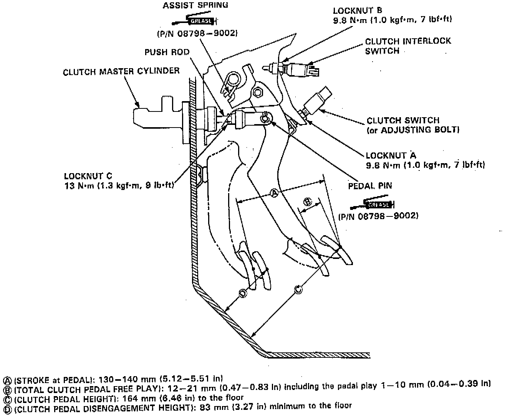

Clutch Pedal Assembly: Adjustments

NOTE: The clutch is self-adjusting to compensate for wear.
CAUTION: If there is no clearance between the master cylinder piston and push rod, the release bearing is held against the diaphragm spring, which can result in clutch slippage or other clutch problems.
1. Loosen locknut A, and back off the clutch switch (or adjusting bolt) until it no longer touches the clutch pedal.
2. Loosen locknut C, and turn the push rod in or out to get the specified stroke (A) and height (C) at the clutch pedal.
3. Tighten locknut C.
4. Turn the clutch switch (or adjusting bolt) until it contacts the clutch pedal.
5. Turn the clutch switch (or adjusting bolt) in 3/4 to 1 full turn further.
6. Tighten locknut A.
7. Loosen locknut B on the clutch interlock switch.
8. Measure the clearance between the floor board and clutch pedal with the clutch pedal fully depressed.
9. Release the clutch pedal 15 - 20 mm (0.59 - 0.79 inch) from the fully depressed position and hold it there. Adjust the position of the clutch interlock switch so that the engine will start with the clutch pedal in this position.
10. Turn clutch interlock switch 3/4 to 1 full turn further.
11. Tighten locknut B.